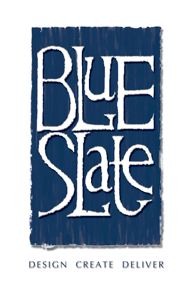
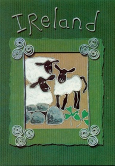

BLUE SLATE design and project management


BACKGROUND


Janice graduated with a degree in three dimensional design in 1987 from the University of Ulster, Belfast, and upon completion knew that she wanted to work in the field of craft and design, running her own business.
It was during the early 90’s that Janice got her break in publishing and through a contact made at Showcase Ireland she started to produce her own range of greeting cards* which were particularly successful in Japan, USA and the U.K., while gaining specialist knowledge of Local National and International Trade Fairs.
She gained Project Management experience working in the craft sector for both the Crafts Council of Ireland and Craft NI and her responsibilities included: mentoring the young designers, marketing their companies, networking and building good working relationships with UK publishing houses and other organisations such as Amnesty International Ireland consequently she has built a considerable store of both practical and industry knowledge over the years.
She has a flair for designing specialist leaflets and catalogues and is adept at managing and overseeing simple or complex printed promotional material.
Janice works on a freelance basis and enjoys the challenges of both Design and Project Management. She recently worked with both the Department of Culture Arts and Leisure at The Smithsonian Folklife Festival, Washington and with the Department of Agriculture and Rural Development, organising European Educational Study Trips for the Northern Irish Equine Industry.
-
*Janice now sells her cards directly contact her for details.
-
*Trade orders very welcome.
Thank-You
for visiting my site if you have a celebration that needs bespoke invites then please get in touch
07966828789 or janice@blueslate.com